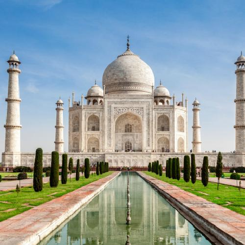

Taj Mahal
Índia 🇮🇳
Localização: Agra, Índia
Construção: Século XVII
O Taj Mahal é um dos monumentos mais conhecidos do mundo. Construído pelo imperador Shah Jahan em homenagem à sua esposa Mumtaz Mahal, o monumento é famoso por sua arquitetura em mármore branco e pelos detalhes ornamentais.
Atualmente, o Taj Mahal é um dos principais pontos turísticos da Índia e representa uma importante parte da história e da arquitetura do país.